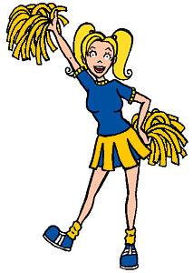

Characters
Characters
|
Brittany |
|---|
|

Full Name: Brittany Taylor Current Age: 18 Current Vocation: Freshman at Great Prairie State University Season One Age: 16 Season One Vocation: Sophomore at Lawndale High Parents: Steve, Vivian (mother), and Ashley-Amber (stepmother) Taylor Siblings: Brian First Appearance: Esteemsters
Brittany is Lawndale High's resident "airhead blonde." She is the head of the varsity cheerleading squad, which is practically the only thing she's good at since she's about as bright as a three watt light bulb. (Thinking is definitely not her strong suit; whenever she's confused, her usual response is a pathetic "Eep!" as her brain seizes up.) Her favorite activities include cheering, parties, shopping, her boyfriend Kevin, twirling her hair around her finger with a vacant look in her eyes, and listening to the soothing sound of the wind blowing between her ears. She and Daria are acquaintances, though Daria would probably hesitate to call her a "friend." |
|
Voice:
Brittany's voice is performed by Janie Mertz (aka "Lisa Collins"), who also does the voices of Sandi, Linda, the reporter from Sick, Sad World, and Andrea (starting with season 4). |
|
Trivia |
|